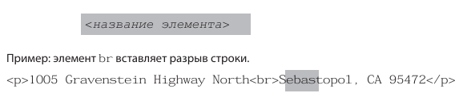

Просмотр размеченной веб-страницы (см. рис. 4.10 и ЦВ-4.11) показывает, что брау зер можно использовать при размещении на странице некоторой визуальной иерар хии,
Расход ткани дается ориентировочно и рассчитывается автоматически исходя из базовой модели изделия.
когда заголовок первого уровня представляется на странице самым большим и выделенным шрифтом, а заголовки второго уровня уже выделены более мелким шрифтом и так далее.Каким образом браузер узнает о том, какой вид должен иметь элемент h1? Здесь при меняется таблица стилей! Браузеры располагают собственными встроенными табли цами стилей (в спецификации их называют таблицами стилей пользовательского агента), где описано заданное по умолчанию отображение элементов. Отображение, заданное по умолчанию, свойственно для всех браузеров (например, все элементы h1 больше и сильнее выделены), но есть некоторые отличия (элемент blockquote для длинных цитат может как иметь отступ от текста, так и не иметь его).
Если вы полагаете, что элемент h1 слишком велик и неуклюж при отображении с помощью браузера, измените его вид при помощи собственного правила таблицы стилей. Но не следует для улучшения вида помечать главный заголовок другим эле ментом — например, применять элемент h3 вместо элемента h1, чтобы уменьшить размеры заголовка. Прибегать к подобным ухищрениям иногда приходилось, когда еще не существовало повсеместной поддержки таблиц стилей. Так что всегда сле дует выбирать элементы, исходя из их функций при описании контента, и меньше беспокоиться о заданном по умолчанию отображении элементов браузером.
До этого момента почти все элементы, примененные для разметки начальной веб страницы «Black Goose Bistro», следовали синтаксису, представленному на рис. 4.6: текстовый контент заключался в начальный и конечный теги.
Однако часть элементов не включает контент, поскольку применяются как носители указаний. Эти элементы называются пустыми. примером пустого элемента служит элемент изображения img. Этот элемент указывает браузеру, что необходимо полу чить с сервера файл изображения и вставить его на указанное место в тексте. Иные пустые элементы указывают на разрыв строки: br, тематические разрывы: hr — что расшифровывается как «горизонтальные линейки», а также — на элементы, предо ставляющие информацию о документе, но не влияющие на отображение контен та, — например: meta (этот элемент уже рассматривался в этой главе).
На рис. 4.12 показан совсем несложный синтаксис пустого элемента (сравните с рис. 4.6).
Подробнее
Процесс вычислений значительно ускорит калькулятор, но помните, что он не учтет особенности фигуры, фактуру материала. Чтобы не купить лишнее полотно, вы можете позвонить нашим специалистам.